{kind=link}
household/round_table
keep existing

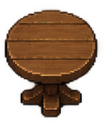
At game scale the existing round table has a clearer rim and a broader usable tabletop; retain its silhouette.
interior_round_table216 named cutouts. 51 additions and 4 replacements enter the game. Other candidates remain outside the editor palette.
Game-scale comparison sheet · Crop and decision manifest
keep existing

At game scale the existing round table has a clearer rim and a broader usable tabletop; retain its silhouette.
interior_round_tablearchive
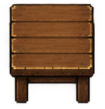
Overlapping style/orientation or less useful than the curated selection; not added to the editor.
household/square_tablekeep existing
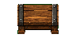
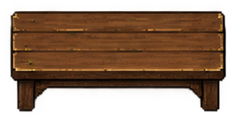
Existing connected table segments support expandable dining groups.
interior_table_h_middlekeep existing

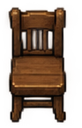
Keep the coherent existing four-direction seating set; the supplied front views do not include a true rear view.
interior_chair_southadd
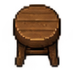
Distinct furnishing, supply type, or activity not represented by the retained core furniture.
interior_stoolkeep existing

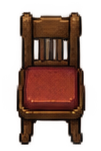
Keep the existing padded directional set instead of a near-duplicate single chair.
interior_chair_south_altadd
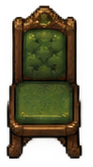
Distinct furnishing, supply type, or activity not represented by the retained core furniture.
interior_armchair_greenadd
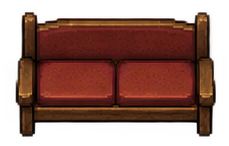
Distinct furnishing, supply type, or activity not represented by the retained core furniture.
interior_sofa_redkeep existing
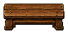
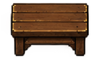
Existing bench remains consistent with the modular dining groups and paired vertical bench.
interior_bench_harchive
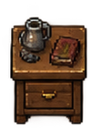
Overlapping style/orientation or less useful than the curated selection; not added to the editor.
household/bedside_cabinetadd
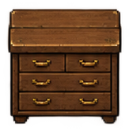
Distinct furnishing, supply type, or activity not represented by the retained core furniture.
interior_chest_of_drawersadd
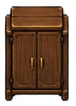
Distinct furnishing, supply type, or activity not represented by the retained core furniture.
interior_wardrobeadd
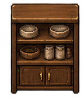
Distinct furnishing, supply type, or activity not represented by the retained core furniture.
interior_crockery_cupboardreplace
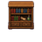
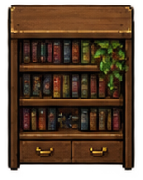
Clearer front elevation and finer material detail; reuse the existing editor/save identity.
interior_bookshelfadd
Distinct furnishing, supply type, or activity not represented by the retained core furniture.
interior_wall_booksreplace
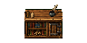
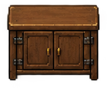
Clearer front elevation and finer material detail; reuse the existing editor/save identity.
interior_low_cupboardarchive
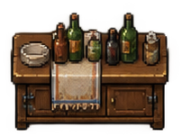
Overlapping style/orientation or less useful than the curated selection; not added to the editor.
household/drinks_counterkeep existing
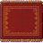
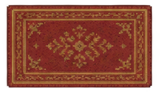
Keep the existing continuous tiled rug system, whose borders join beneath furniture.
interior_rug_redkeep existing

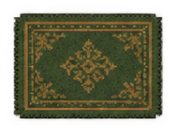
Keep region-aware continuous rugs rather than introduce competing floor stamps.
interior_rug_tealarchive
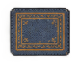
Overlapping style/orientation or less useful than the curated selection; not added to the editor.
household/rug_bluekeep existing

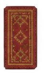
Existing runner remains consistent with the tiled carpets.
interior_rug_runnerkeep existing

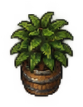
The existing brighter leaf clusters stay more readable in dim rooms at one-tile scale.
interior_floor_leafy_plantkeep existing

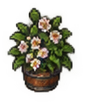
Existing saturated flowers and patterned pot remain more distinct at game scale.
interior_floor_flower_planterkeep existing
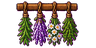
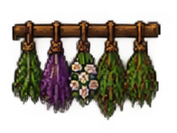
Existing separated herb bunches read more clearly at the shared wall-decor scale.
interior_wall_herb_rackarchive
Overlapping style/orientation or less useful than the curated selection; not added to the editor.
household/hanging_lanternarchive
Overlapping style/orientation or less useful than the curated selection; not added to the editor.
household/standing_lanternadd
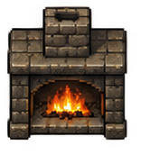
Distinct furnishing, supply type, or activity not represented by the retained core furniture.
interior_fireplaceadd
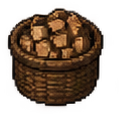
Distinct furnishing, supply type, or activity not represented by the retained core furniture.
interior_firewood_basketarchive
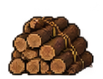
Overlapping style/orientation or less useful than the curated selection; not added to the editor.
household/logsarchive
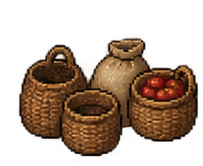
Overlapping style/orientation or less useful than the curated selection; not added to the editor.
household/provision_basketsadd
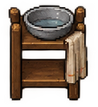
Distinct furnishing, supply type, or activity not represented by the retained core furniture.
interior_washstandadd
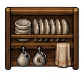
Distinct furnishing, supply type, or activity not represented by the retained core furniture.
interior_plate_rackkeep existing

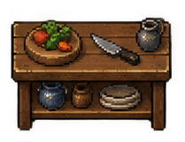
Existing preparation equipment remains clearer as a working kitchen station at game scale.
interior_cooking_stationarchive
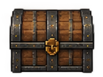
Overlapping style/orientation or less useful than the curated selection; not added to the editor.
household/iron_chestadd
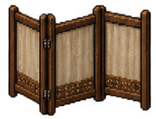
Distinct furnishing, supply type, or activity not represented by the retained core furniture.
interior_room_screenadd
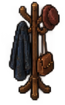
Distinct furnishing, supply type, or activity not represented by the retained core furniture.
interior_coat_standadd
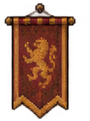
Distinct furnishing, supply type, or activity not represented by the retained core furniture.
interior_wall_banner_lionadd
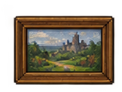
Distinct furnishing, supply type, or activity not represented by the retained core furniture.
interior_wall_landscapeadd
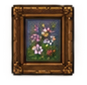
Distinct furnishing, supply type, or activity not represented by the retained core furniture.
interior_wall_flower_paintingadd
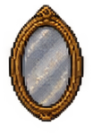
Distinct furnishing, supply type, or activity not represented by the retained core furniture.
interior_wall_mirroradd
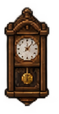
Distinct furnishing, supply type, or activity not represented by the retained core furniture.
interior_wall_clockadd
Distinct furnishing, supply type, or activity not represented by the retained core furniture.
interior_wall_antlersarchive
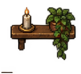
Overlapping style/orientation or less useful than the curated selection; not added to the editor.
household/wall_candle_shelfadd
Distinct furnishing, supply type, or activity not represented by the retained core furniture.
interior_tabletop_booksadd
Distinct furnishing, supply type, or activity not represented by the retained core furniture.
interior_tabletop_scrollsadd
Distinct furnishing, supply type, or activity not represented by the retained core furniture.
interior_tabletop_inkwellkeep existing
Existing candle centerpiece is legible at small scale and already matches the light and dining composition.
interior_tabletop_candleadd
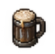
Distinct furnishing, supply type, or activity not represented by the retained core furniture.
interior_tabletop_tankardadd
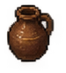
Distinct furnishing, supply type, or activity not represented by the retained core furniture.
interior_tabletop_jugadd
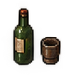
Distinct furnishing, supply type, or activity not represented by the retained core furniture.
interior_tabletop_winearchive
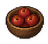
Overlapping style/orientation or less useful than the curated selection; not added to the editor.
household/tabletop_applesadd
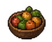
Distinct furnishing, supply type, or activity not represented by the retained core furniture.
interior_tabletop_fruitarchive
Overlapping style/orientation or less useful than the curated selection; not added to the editor.
household/sack_grainarchive
Overlapping style/orientation or less useful than the curated selection; not added to the editor.
household/sack_tiedreplace
Clearer front elevation and finer material detail; reuse the existing editor/save identity.
interior_cratesarchive
Overlapping style/orientation or less useful than the curated selection; not added to the editor.
household/barrelarchive
Overlapping style/orientation or less useful than the curated selection; not added to the editor.
household/cratearchive
Overlapping style/orientation or less useful than the curated selection; not added to the editor.
warehouse/cratearchive
Overlapping style/orientation or less useful than the curated selection; not added to the editor.
warehouse/crates_stackarchive
Overlapping style/orientation or less useful than the curated selection; not added to the editor.
warehouse/crates_widearchive
Overlapping style/orientation or less useful than the curated selection; not added to the editor.
warehouse/shipping_crateadd
Distinct furnishing, supply type, or activity not represented by the retained core furniture.
interior_produce_applesadd
Distinct furnishing, supply type, or activity not represented by the retained core furniture.
interior_produce_cabbagesadd
Distinct furnishing, supply type, or activity not represented by the retained core furniture.
interior_produce_cornarchive
Overlapping style/orientation or less useful than the curated selection; not added to the editor.
warehouse/potatoes_cratearchive
Overlapping style/orientation or less useful than the curated selection; not added to the editor.
warehouse/crate_talladd
Distinct furnishing, supply type, or activity not represented by the retained core furniture.
interior_palletarchive
Overlapping style/orientation or less useful than the curated selection; not added to the editor.
warehouse/barrelreplace
Clearer front elevation and finer material detail; reuse the existing editor/save identity.
interior_barrelsarchive
Overlapping style/orientation or less useful than the curated selection; not added to the editor.
warehouse/barrel_standarchive
Overlapping style/orientation or less useful than the curated selection; not added to the editor.
warehouse/cask_stackarchive
Overlapping style/orientation or less useful than the curated selection; not added to the editor.
warehouse/cask_cradlekeep existing
Retain the established grain-storage silhouette and layout footprint.
interior_grain_sacks_varchive
Overlapping style/orientation or less useful than the curated selection; not added to the editor.
warehouse/sackarchive
Overlapping style/orientation or less useful than the curated selection; not added to the editor.
warehouse/sacks_pairadd
Distinct furnishing, supply type, or activity not represented by the retained core furniture.
interior_tied_balesarchive
Overlapping style/orientation or less useful than the curated selection; not added to the editor.
warehouse/balearchive
Overlapping style/orientation or less useful than the curated selection; not added to the editor.
warehouse/bales_smallarchive
Overlapping style/orientation or less useful than the curated selection; not added to the editor.
warehouse/logsarchive
Overlapping style/orientation or less useful than the curated selection; not added to the editor.
warehouse/cask_shelfadd
Distinct furnishing, supply type, or activity not represented by the retained core furniture.
interior_supplies_shelfadd
Distinct furnishing, supply type, or activity not represented by the retained core furniture.
interior_tools_shelfadd
Distinct furnishing, supply type, or activity not represented by the retained core furniture.
interior_pantry_shelfarchive
Overlapping style/orientation or less useful than the curated selection; not added to the editor.
warehouse/wall_pantryadd
Distinct furnishing, supply type, or activity not represented by the retained core furniture.
interior_wall_toolsadd
Distinct furnishing, supply type, or activity not represented by the retained core furniture.
interior_wall_parcelsarchive
Overlapping style/orientation or less useful than the curated selection; not added to the editor.
warehouse/wall_shelfkeep existing

Existing desk already supplies the writing function with readable paper and ink.
interior_study_desk_harchive
Overlapping style/orientation or less useful than the curated selection; not added to the editor.
warehouse/workbenchkeep existing

Existing merchant counter already fills this role; avoid another equivalent editor entry.
interior_shop_counterarchive
Overlapping style/orientation or less useful than the curated selection; not added to the editor.
warehouse/welcome_counterarchive
Overlapping style/orientation or less useful than the curated selection; not added to the editor.
warehouse/wall_rope_lanternarchive
Overlapping style/orientation or less useful than the curated selection; not added to the editor.
warehouse/wall_dried_foodarchive
Overlapping style/orientation or less useful than the curated selection; not added to the editor.
warehouse/wall_lanternarchive
Overlapping style/orientation or less useful than the curated selection; not added to the editor.
warehouse/standing_lanternadd
Distinct furnishing, supply type, or activity not represented by the retained core furniture.
interior_basket_emptyarchive
Overlapping style/orientation or less useful than the curated selection; not added to the editor.
warehouse/basket_tallarchive
Overlapping style/orientation or less useful than the curated selection; not added to the editor.
warehouse/basket_applesadd
Distinct furnishing, supply type, or activity not represented by the retained core furniture.
interior_basket_demijohnarchive
Overlapping style/orientation or less useful than the curated selection; not added to the editor.
warehouse/basket_jugarchive
Overlapping style/orientation or less useful than the curated selection; not added to the editor.
warehouse/chest_openarchive
Overlapping style/orientation or less useful than the curated selection; not added to the editor.
warehouse/iron_chestarchive
Overlapping style/orientation or less useful than the curated selection; not added to the editor.
warehouse/wood_screenadd
Distinct furnishing, supply type, or activity not represented by the retained core furniture.
interior_pottery_clusterarchive
Overlapping style/orientation or less useful than the curated selection; not added to the editor.
warehouse/sack_smallarchive
Overlapping style/orientation or less useful than the curated selection; not added to the editor.
warehouse/produce_crateadd
Distinct furnishing, supply type, or activity not represented by the retained core furniture.
interior_produce_fishadd
Distinct furnishing, supply type, or activity not represented by the retained core furniture.
interior_produce_potatoesarchive
Overlapping style/orientation or less useful than the curated selection; not added to the editor.
warehouse/stone_crateadd
Distinct furnishing, supply type, or activity not represented by the retained core furniture.
interior_bottle_crateadd
Distinct furnishing, supply type, or activity not represented by the retained core furniture.
interior_coal_cratearchive
Overlapping style/orientation or less useful than the curated selection; not added to the editor.
warehouse/grain_spillarchive
Overlapping style/orientation or less useful than the curated selection; not added to the editor.
warehouse/bencharchive
Overlapping style/orientation or less useful than the curated selection; not added to the editor.
warehouse/stooladd
Distinct furnishing, supply type, or activity not represented by the retained core furniture.
interior_broomadd
Distinct furnishing, supply type, or activity not represented by the retained core furniture.
interior_bucketarchive
Overlapping style/orientation or less useful than the curated selection; not added to the editor.
warehouse/handcart_flatarchive
Overlapping style/orientation or less useful than the curated selection; not added to the editor.
warehouse/handcartarchive
Overlapping style/orientation or less useful than the curated selection; not added to the editor.
warehouse/ladderadd
Distinct furnishing, supply type, or activity not represented by the retained core furniture.
interior_stepladderarchive
Overlapping style/orientation or less useful than the curated selection; not added to the editor.
warehouse/stool_squarearchive
Overlapping style/orientation or less useful than the curated selection; not added to the editor.
warehouse/drawersarchive
Overlapping style/orientation or less useful than the curated selection; not added to the editor.
warehouse/bottles_cabinetarchive
Overlapping style/orientation or less useful than the curated selection; not added to the editor.
directional/chair_wood_front_aarchive
Overlapping style/orientation or less useful than the curated selection; not added to the editor.
directional/chair_wood_front_bkeep existing
Keep the complete existing seating set and its consistent table-facing orientation.
interior_chair_westarchive
Overlapping style/orientation or less useful than the curated selection; not added to the editor.
directional/chair_wood_leftarchive
Overlapping style/orientation or less useful than the curated selection; not added to the editor.
directional/chair_red_front_aarchive
Overlapping style/orientation or less useful than the curated selection; not added to the editor.
directional/chair_red_front_barchive
Overlapping style/orientation or less useful than the curated selection; not added to the editor.
directional/chair_red_rightarchive
Overlapping style/orientation or less useful than the curated selection; not added to the editor.
directional/chair_red_leftarchive
Overlapping style/orientation or less useful than the curated selection; not added to the editor.
directional/chair_green_front_aarchive
Overlapping style/orientation or less useful than the curated selection; not added to the editor.
directional/chair_green_front_barchive
Overlapping style/orientation or less useful than the curated selection; not added to the editor.
directional/chair_green_rightarchive
Overlapping style/orientation or less useful than the curated selection; not added to the editor.
directional/chair_green_leftarchive
Overlapping style/orientation or less useful than the curated selection; not added to the editor.
directional/stool_aarchive
Overlapping style/orientation or less useful than the curated selection; not added to the editor.
directional/stool_barchive
Overlapping style/orientation or less useful than the curated selection; not added to the editor.
directional/stool_carchive
Overlapping style/orientation or less useful than the curated selection; not added to the editor.
directional/chair_low_rightarchive
Overlapping style/orientation or less useful than the curated selection; not added to the editor.
directional/chair_low_leftarchive
Overlapping style/orientation or less useful than the curated selection; not added to the editor.
directional/bench_hkeep existing

Keep the paired modular bench orientations.
interior_bench_varchive
Overlapping style/orientation or less useful than the curated selection; not added to the editor.
directional/bench_backarchive
Overlapping style/orientation or less useful than the curated selection; not added to the editor.
directional/bench_back_varchive
Overlapping style/orientation or less useful than the curated selection; not added to the editor.
directional/table_smallarchive
Overlapping style/orientation or less useful than the curated selection; not added to the editor.
directional/table_squarearchive
Overlapping style/orientation or less useful than the curated selection; not added to the editor.
directional/table_varchive
Overlapping style/orientation or less useful than the curated selection; not added to the editor.
directional/table_roundarchive
Overlapping style/orientation or less useful than the curated selection; not added to the editor.
directional/table_harchive
Overlapping style/orientation or less useful than the curated selection; not added to the editor.
directional/table_slattedarchive
Overlapping style/orientation or less useful than the curated selection; not added to the editor.
directional/table_slatted_varchive
Overlapping style/orientation or less useful than the curated selection; not added to the editor.
directional/drawers_frontarchive
Overlapping style/orientation or less useful than the curated selection; not added to the editor.
directional/drawers_sidearchive
Overlapping style/orientation or less useful than the curated selection; not added to the editor.
directional/wardrobe_frontarchive
Overlapping style/orientation or less useful than the curated selection; not added to the editor.
directional/wardrobe_sidearchive
Overlapping style/orientation or less useful than the curated selection; not added to the editor.
directional/bookshelf_frontarchive
Overlapping style/orientation or less useful than the curated selection; not added to the editor.
directional/bookshelf_sidearchive
Overlapping style/orientation or less useful than the curated selection; not added to the editor.
directional/cupboard_sidearchive
Overlapping style/orientation or less useful than the curated selection; not added to the editor.
directional/crockery_bookshelfarchive
Overlapping style/orientation or less useful than the curated selection; not added to the editor.
directional/crockery_sidearchive
Overlapping style/orientation or less useful than the curated selection; not added to the editor.
directional/provisions_shelfarchive
Overlapping style/orientation or less useful than the curated selection; not added to the editor.
directional/provisions_sidearchive
Overlapping style/orientation or less useful than the curated selection; not added to the editor.
directional/bar_frontarchive
Overlapping style/orientation or less useful than the curated selection; not added to the editor.
directional/bar_sidearchive
Overlapping style/orientation or less useful than the curated selection; not added to the editor.
directional/workbench_frontarchive
Overlapping style/orientation or less useful than the curated selection; not added to the editor.
directional/workbench_sidearchive
Overlapping style/orientation or less useful than the curated selection; not added to the editor.
directional/reading_counterarchive
Overlapping style/orientation or less useful than the curated selection; not added to the editor.
directional/reading_counter_sidearchive
Overlapping style/orientation or less useful than the curated selection; not added to the editor.
directional/bench_lowarchive
Overlapping style/orientation or less useful than the curated selection; not added to the editor.
directional/bench_low_sidearchive
Overlapping style/orientation or less useful than the curated selection; not added to the editor.
directional/linen_shelfarchive
Overlapping style/orientation or less useful than the curated selection; not added to the editor.
directional/linen_shelf_sidearchive
Overlapping style/orientation or less useful than the curated selection; not added to the editor.
directional/barrel_aarchive
Overlapping style/orientation or less useful than the curated selection; not added to the editor.
directional/barrel_barchive
Overlapping style/orientation or less useful than the curated selection; not added to the editor.
directional/cask_frontadd
Distinct furnishing, supply type, or activity not represented by the retained core furniture.
interior_cask_on_sidearchive
Overlapping style/orientation or less useful than the curated selection; not added to the editor.
directional/barrel_pairarchive
Overlapping style/orientation or less useful than the curated selection; not added to the editor.
directional/barrel_carchive
Overlapping style/orientation or less useful than the curated selection; not added to the editor.
directional/crate_aarchive
Overlapping style/orientation or less useful than the curated selection; not added to the editor.
directional/crate_barchive
Overlapping style/orientation or less useful than the curated selection; not added to the editor.
directional/crate_carchive
Overlapping style/orientation or less useful than the curated selection; not added to the editor.
directional/crates_aarchive
Overlapping style/orientation or less useful than the curated selection; not added to the editor.
directional/crates_barchive
Overlapping style/orientation or less useful than the curated selection; not added to the editor.
directional/crates_carchive
Overlapping style/orientation or less useful than the curated selection; not added to the editor.
directional/crate_sidearchive
Overlapping style/orientation or less useful than the curated selection; not added to the editor.
directional/sack_aarchive
Overlapping style/orientation or less useful than the curated selection; not added to the editor.
directional/sack_barchive
Overlapping style/orientation or less useful than the curated selection; not added to the editor.
directional/sack_pairarchive
Overlapping style/orientation or less useful than the curated selection; not added to the editor.
directional/sack_roundarchive
Overlapping style/orientation or less useful than the curated selection; not added to the editor.
directional/bales_aarchive
Overlapping style/orientation or less useful than the curated selection; not added to the editor.
directional/bales_barchive
Overlapping style/orientation or less useful than the curated selection; not added to the editor.
directional/bales_pairadd
Distinct furnishing, supply type, or activity not represented by the retained core furniture.
interior_ironbound_chestarchive
Overlapping style/orientation or less useful than the curated selection; not added to the editor.
directional/iron_chest_sidearchive
Overlapping style/orientation or less useful than the curated selection; not added to the editor.
directional/chest_frontarchive
Overlapping style/orientation or less useful than the curated selection; not added to the editor.
directional/chest_openarchive
Overlapping style/orientation or less useful than the curated selection; not added to the editor.
directional/chest_sidearchive
Overlapping style/orientation or less useful than the curated selection; not added to the editor.
directional/bin_front_aarchive
Overlapping style/orientation or less useful than the curated selection; not added to the editor.
directional/bin_front_barchive
Overlapping style/orientation or less useful than the curated selection; not added to the editor.
directional/bin_sidearchive
Overlapping style/orientation or less useful than the curated selection; not added to the editor.
directional/bin_corneradd
Distinct furnishing, supply type, or activity not represented by the retained core furniture.
interior_open_storage_binarchive
Overlapping style/orientation or less useful than the curated selection; not added to the editor.
directional/bin_front_cadd
Distinct furnishing, supply type, or activity not represented by the retained core furniture.
interior_handcartarchive
Overlapping style/orientation or less useful than the curated selection; not added to the editor.
directional/handcart_flatarchive
Overlapping style/orientation or less useful than the curated selection; not added to the editor.
directional/handcart_frontarchive
Overlapping style/orientation or less useful than the curated selection; not added to the editor.
directional/ladder_leftarchive
Overlapping style/orientation or less useful than the curated selection; not added to the editor.
directional/ladder_rightadd
Distinct furnishing, supply type, or activity not represented by the retained core furniture.
interior_leaning_ladderarchive
Overlapping style/orientation or less useful than the curated selection; not added to the editor.
directional/bench_shortarchive
Overlapping style/orientation or less useful than the curated selection; not added to the editor.
directional/bench_sidearchive
Overlapping style/orientation or less useful than the curated selection; not added to the editor.
directional/bench_longarchive
Overlapping style/orientation or less useful than the curated selection; not added to the editor.
directional/bench_endarchive
Overlapping style/orientation or less useful than the curated selection; not added to the editor.
directional/side_tablearchive
Overlapping style/orientation or less useful than the curated selection; not added to the editor.
directional/console_tablearchive
Overlapping style/orientation or less useful than the curated selection; not added to the editor.
directional/console_side